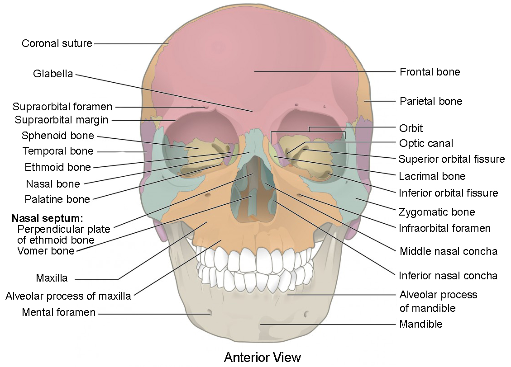

Web Page Bio - Harrison Zhu
About Me
This is my web page bio detailing information about my education and background. Additionally, this page also provides information as to why I took Accessible Computing. The a document of Web Page Bio Links has links to the web bios of other students in the class if you wish to view more!
Howdy! My name is Harrison Zhu and I am the loudest and proudest junior here at Texas A&M, majoring in computer science and minoring in mathematics and biology.

I am from Houston. Though it should be noted that I actually do not actually live in Houston anymore and live in Pearland, one of its many suburbs. In Pearland, I attended Glenda Dawson High School. I did live in the actual city of Houston for the first dozen years of my life, and attended elementary school there.
Courses
In order to finish my degree on time, each semester since my sophomore year spring I have had to take 18 or 19 hours to ensure I satisfy the minimum requirements. As such, at least pertaining to my course load, I am always taking the maximum or close to the maximum number of credits allowed each semester. This semester I am taking 18 credits, with the classes being:
 CSCE 411: Design and Analysis of Algorithms
CSCE 411: Design and Analysis of Algorithms- CSCE 412: Cloud Computing
- CSCE 432: Accessible Computing
- CHEM 258: Organic Chemistry 2
 BIOL 319: Human Anatomy & Physiology 1
BIOL 319: Human Anatomy & Physiology 1
I have to say that out of all the classes I am taking this semester, the one I am most worried about is BIOL 319, which is also commonly referred to as A&P. In A&P, we have lab quizzes every week, which typically consists of memorizing the contents of the lab that week. It is almost required for students to start studying prior to lab, as a single lab period is not enough to remember 80 bones or 50 different muscles and their actions, origins, and insertions. As such, A&P is the class I am most worried about this semester given the amount of content.
Reasons for Taking CSCE 432
Introduction to Accessibility
Though I have always been aware of tools like screen-readers that help those with disabilities use technology, it has never been something I actively thought about. This definitely comes from a place of privilege where I am able to go about my life without really considering or worrying about obstacles I may face when it comes to accessibility.
When taking CSCE 331, I definitely learned quite a bit about accessibility when it came to software and computing as a whole. Although this was just a small introduction to accessibility, it helped ignite my curiosity and interest in accessible computing.
When working on our Panda Express POS System, my group decided to have our three accessibility features as:
- Language Translation
- Contrast Adjustment
- Screen Magnification
Though it was fun to implement, I noticed that the quality of our implementations was never measured, nor was it ever graded. Thus, I started wondering if there were standards or laws that dictated the quality of accessibility software, like if there was a specific difference in color needed for contrast or the range of magnification for a web application.
Given this introduction to accessible computing, I took CSCE 432 to learn more about how technology is used to accomodate and aid people with disabilities.
Goals in the Course
- I want to learn more about the different guidelines and laws put in place to ensure accessibility on the internet and in technology.
- I hope to expand my view on disabilities and how they impact people. For example, when people mention disabilites, I always think of visual and auditory disabilities, but many people also health-related disabilites that are often not visible at all.
- I want to gain more experience building and developing accessibility tools, and look into the planning process. More specifically, I want to see how Universal Design is used to plan and design tools.
Other Reasons
- I will also admit that one of the other reasons I ended up taking CSCE 432 is that it seemed to be lighter than some of the other electives when it came to the amount of work required for the class. That is not to say that it is easy by any means given that this class focuses less technical and more philosophical concepts.
- One last reason is that the course just happened to work with my schedule. I was originally planning on taking machine learning instead, but it conflicted with the schedule I had already planned, so I just swapped it for a different elective instead.
Similarities
If you have any similar reasons for taking CSCE 432 please let me know!